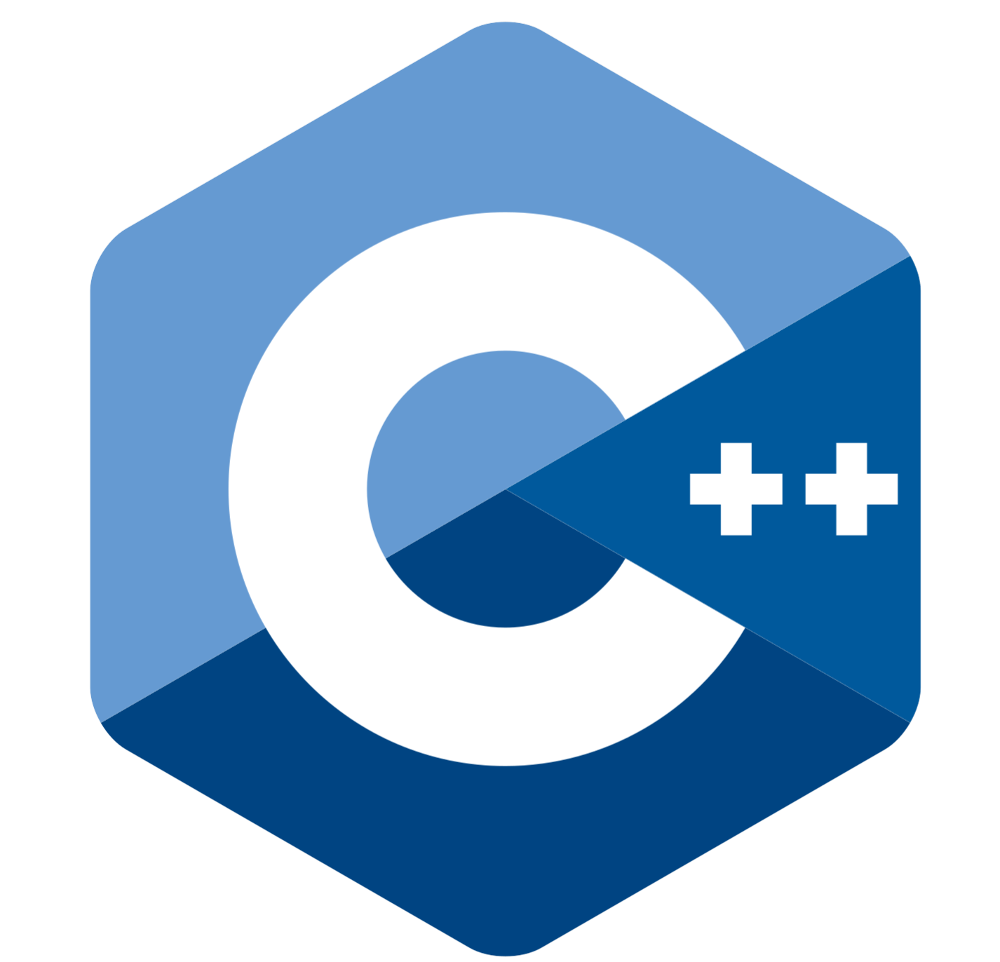

Hello, I'm Fadhlur Rachman Puasa, a student from the Manado State Polytechnic, majoring in electrical
engineering with an informatics engineering study program.
| Name | : Fadhlur Rachman Puasa |
| Place and date of birth | : Tomohon, 02 May 2006 |
| Residence | : Paret, Kotabunan, Boltim |
| Phone Number | : +62 8522 3948 533 |
| Gender | : Man |
| Regilion | : Islam |
| Cityzenship | : Indonesia |
Fadhlur Rachman Puasa
Hello
Assalamualaikum warahmatullahi wabarakatuh, Shallom
Let me introduce myself, my name is Fadhlur Rachman Puasa, a student from the 2nd semester class of
Informatics Engineering 6 majoring in electrical engineering, Manado Polytechnic. Currently I am focusing on
developing my skills in website creation.
I hope that by studying at the Manado State Polytechnic I can develop my interests so that it can become
useful knowledge in my world of work.
Apart from liking the world of programming, I also really like sports. I like playing football to relieve
fatigue. By playing football I also made many friends with various different characteristics.
I was born on May 2 2006 and am now 18 years old. I am the third of three children. My mother is a housewife
who carries out her duties well like a housewife. My father is a retired civil servant with extensive
knowledge. in teaching me about what he knows in the world of education. I have two older siblings, the first
sister and the second brother. Honestly, I often feel jealous of the two of them because they have been
appointed as civil servants, while I am still in the process of achieving the goal that my father wants (civil
servant). In 2017 I graduated from elementary school (SD), in 2019 I graduated from junior high school, and in
2023 I graduated from high school. After graduating from high school my parents said that I should go to
official school, but at that time I was not old enough to enter official school. So I decided to study at
UNIMA, taking the FACULTY OF LANGUAGES AND ARTS majoring in Ballet and Music Arts, but something unexpected
happened. After I had done all the terms and conditions to enter that major, my mother suddenly said something
that made me want to stop in the world of education, if I'm not mistaken, this is what my mother said, "If you
want to stay in that major, I won't finance your studies until completion. You earn your own money to go to
college", something like that. But after that I slowly gave up my intention to study in that department and I
was given an offer to enter the MANADO STATE POLITEKNIK Campus with the major of Electrical Engineering and
Information Engineering Study Program. That's the story. short about me.
Let's see my CV
{kind=link}
The video tells about the activities on Friday 17 May 2024 in front
of the central building of the Manado State Polytechnic campus
Skills
Programing
Before entering campus I took the time to learn several programming languages and when I entered campus I was also taught several programming languages including:
 |
 |  |
 |
General Skills
Apart from having programming skills, I also have general skills including:
Resume
This is my journey in pursuing knowledge in the world of education. I am grateful to have had the opportunity to study as much as possible.
Sumary
Fadhlur R puasa
a student who previously dreamed of becoming a music artist but is now required to follow his parents' wishes by entering the world of informatics.
- Paret Village, Kotabunan District, East Bolaang Mongondow Regency, North Sulawesi Province
- +62 8522 3948 533
- fadhlurpuasa@gmail.com
Education
SD N 1 PARET
2011 - 2017
ONE PARET STATE PRIMARY SCHOOL
At elementary school I only did activities like other children in general, my activities during elementary school there were just getting up in the morning to go to school and then going home.
MTs N 3 BOLTIM
2017 - 2020
THREE BOLTIM STATE ISLAMIC FIRST HIGH SCHOOL
After I finished elementary school in 2017 I continued studying at Madrasah Tsanawiyah. My activities during school there were more or less the same as my activities when I was in elementary school.
SMA N 1 KOTABUNAN
2020 - 2023
ONE CITY STATE HIGH SCHOOL
Well, this is where I started to find my true identity, I used to be shy, but since I entered high school at the Kotabunan State High School, I have found many friends and relatives.
Experience
General treasurer in an extracurricular organization in high school
2022 - 2023
Kotabunan, BOLTIM
First place in high school solo guitar competition
2021 - 2022
Kotabunan, BOLTIM
First place in high school men's solo vocal competition
2021 - 2022
Kotabunan, BOLTIM
Runner Up in the inter-school futsal competition
2023
Kotabunan, BOLTIM
Chairman of the Mini Festival Committee in My Village
2023
Paret, BOLTIM
Contact
Thank you for stopping by my first personal website. I hope you are always healthy with your family. stay healthy, friends.
Fadhlur
If you want to include suggestions, please contact me below, and if you want to stop by my social media accounts, you are welcome.
Desa Paret BolTim
Sulut, Manado
fadhlurpuasa@gmail.com
+62 8522 3948 533